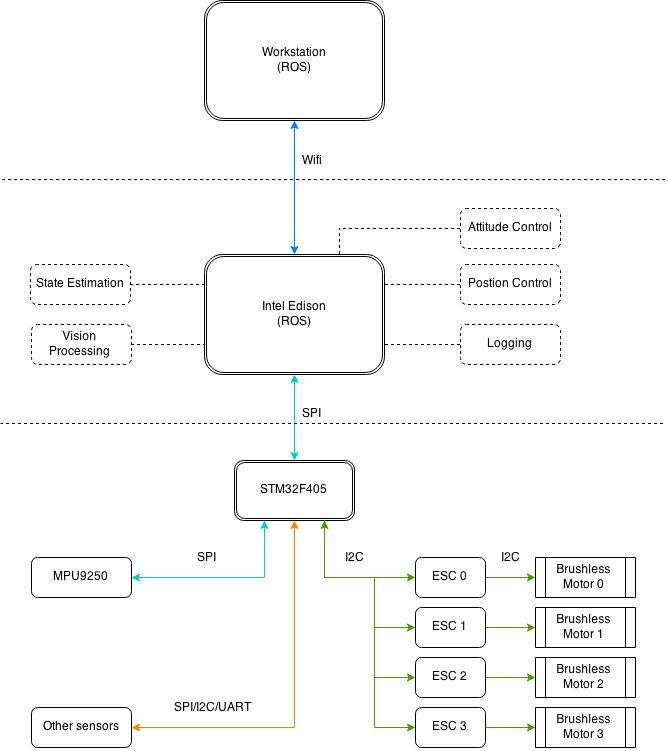
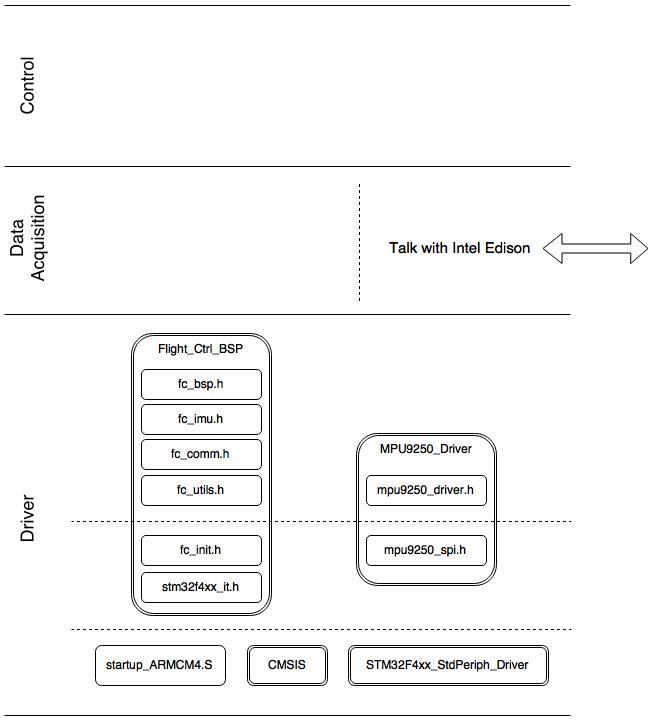
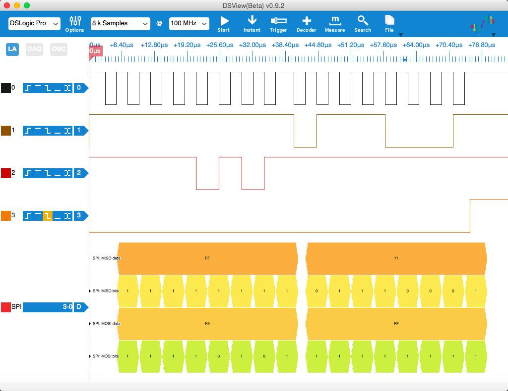
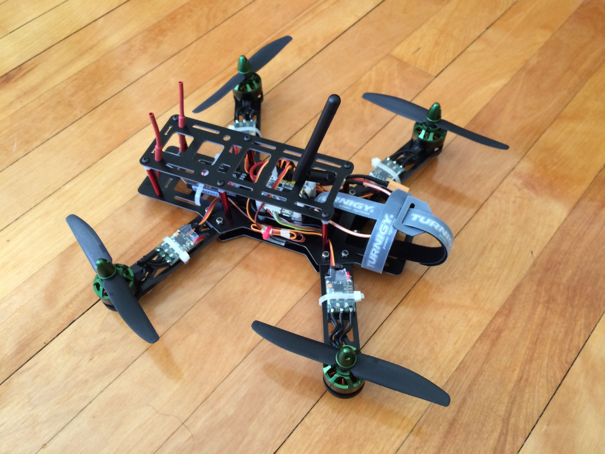

Build Your Own Quadrotor¶
1. System Components¶
- Hardware
- Inertial measurement unit (IMU) - MPU9250
- Flight controller - STM32F405, Intel Edison
- Mechanical frame * 1
- DC brushless motors * 4
- DSC for brushless motors * 4
- Software
- Attitude estimation
- Attitude control
- Position control
- Communications
2. System Structure¶
Low level controller (STM32F405)
- Acquire sensor data (IMU)
- Motor control
High level controller (Intel Edison)
- IMU data processing
- Vison processing
- Attitude and postion control
Workstation
- High level control
- Run computational-heavy algorithms
- Debugging
Overall structure:
{kind=link}
Code structure on STM32F405:
{kind=link}
Code structure on Intel Edison:
(To be added)
3. Interface with MPU9250¶
There are two ways to communicate with MPU9250, SPI or I2C. Since SPI is faster and simpler in terms of signal timing (it uses more pins though), I decided to use the SPI interface.
{kind=link}
To acquire data from MPU9250, the first thing to do is to establish the communication between the MCU and MPU9250. The internal register WHO_AM_I can be used for this check. The above screenshot is captured by a logic analyzer, showing this “handshake”: MCU sends the address of WHO_AM_I (0x80 | 0x75 = 0xF5 for reading from register) and gets 0x71 as a reply.
After the communication is set up properly, we can further configure the registers of MPU9250, like enabling/disabling gyro/acc, selecting full scale of gyro/acc and so on.
4. The Completed Quadrotor¶
(Updated on 01/23/2016)
I finally get enough time and money to get all parts to build a complete quadrotor. I choose the CC3D Revolution flight controller since it has a very small foot print and uses similar chips as what I’ve partially tested before. All parts are selected according to the specifications of commonly seen FPV racing quadrotors. I did a lot of research to find a balance between the performance and my budget when choosing each component. The total cost of the quadrotor and necessary accessories is about $500 dollars. A complete list of the parts will be added soon.
{kind=link}